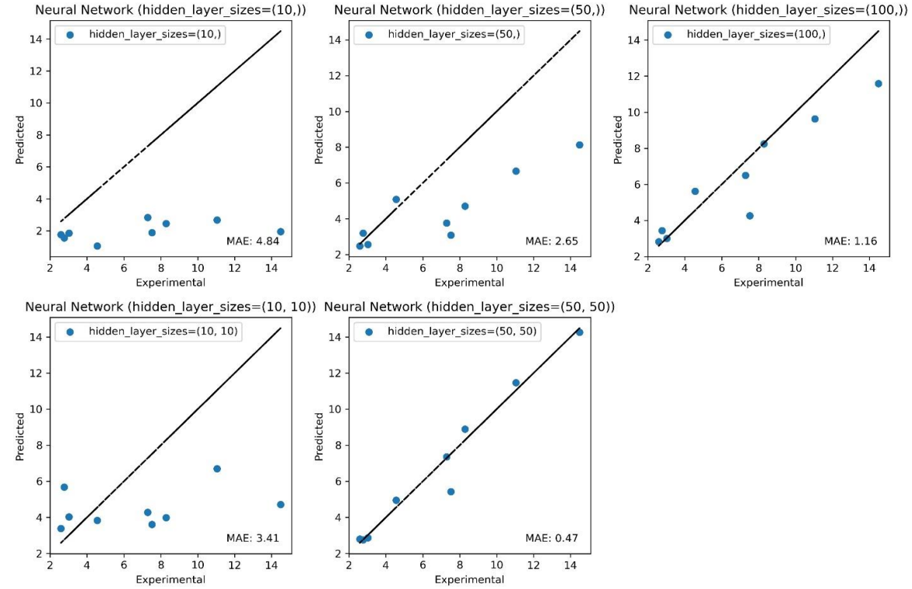

ML en Adsorption
Résumé du Projet : Ce projet met en avant l'application du machine learning pour modéliser, prédire et optimiser les processus d'adsorption de différents polluants à l'aide de biosorbants et matériaux synthétiques.
Contributions Clés :
- Auteur principal d'un article combinant expériences et modélisation par ML de la biosorption de bleu de méthylène par farines d'os
- Application du plan d'expériences, réseaux de neurones (ANN) et analyse de variables pour interprétation des performances d'adsorption
- Co-auteur d'une étude utilisant ML, plan d'expériences et clustering pour la biosorption de l’uranium par hydroxyapatite et farines d'os
- Développement en cours d'une approche prédictive basée sur Random Forest pour l’adsorption de colorants (Reactive Black 5) sur biochars
Publications :
- Biosorption of methylene blue by bone meal: experimental and modeling with machine learning and full factorial design – Front. Environ. Chem. (2024)
- Uranium biosorption by hydroxyapatite and bone meal: evaluation of process variables through experimental design – ESPR (2021)
- Removal of Reactive Black 5 Dye by Biochars: Experimental and Data-Driven Modeling Approaches (en cours de rédaction)

Figure 1 : Architecture ANN et importance des variables pour la biosorption de bleu de méthylène

Figure 2 : Clustering et analyse de variables pour l’adsorption d’uranium par hydroxyapatite et farines d’os

Figure 3 : Prédiction par Random Forest de l’adsorption du colorant Reactive Black 5 (en préparation)
Crédits d’Images :
- Figure 1 : Adaptée de Biosorption of methylene blue by bone meal, Frontiers in Environmental Chemistry (2024)
- Figure 2 : Adaptée de Uranium biosorption by hydroxyapatite and bone meal, Environmental Science and Pollution Research (2021)
- Figure 3 : Issue de Removal of Reactive Black 5 Dye by Biochars, en cours